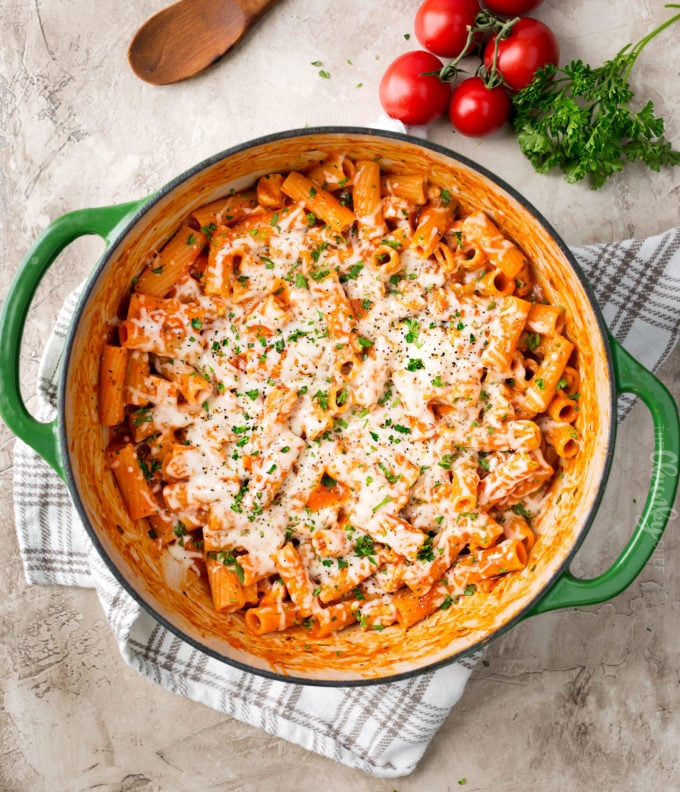

OnePotPasta - "Hühnchen und Parmesan"

- 2-3 boneless skinless chicken breasts
- 1 tsp Italian seasoning
- 1/2 tsp garlic powder
- 1 medium yellow onion
- 3 cloves garlic
- 16 oz dried short-cut pasta
- 24 oz jar of marinara sauce
- water to fill empty marinara sauce jar
- 1 cup mozzarella cheese
- 1/2 cup parmesan cheese
- salt and pepper
- fresh parsley and/or basil, minced
- To a large pot or skillet (I used my dutch oven), add a drizzle of olive oil and heat over MED-HIGH heat. Add chicken, season with salt, pepper, Italian seasoning and garlic powder. Cook about 5 minutes, until chicken is most of the way cooked through. Remove to a plate.
- Add onion and garlic to the pot and cook about 2-3 minutes, until soft. Pour in marinara sauce, fill up empty sauce jar with water and add to the pot. Bring to a boil, then reduce to a strong simmer.
- Add chicken and pasta, stir, then cover and cook for 10-15 minutes, until pasta is cooked to your liking. Stir in parmesan cheese and 1/4 cup of the mozzarella cheese.
- Sprinkle remaining 3/4 cup mozzarella cheese on top of the dish and cook another 2-3 minutes, until cheese is melted and gooey.
- Sprinkle with additional Italian seasoning if desired, and garnish with parsley or basil.